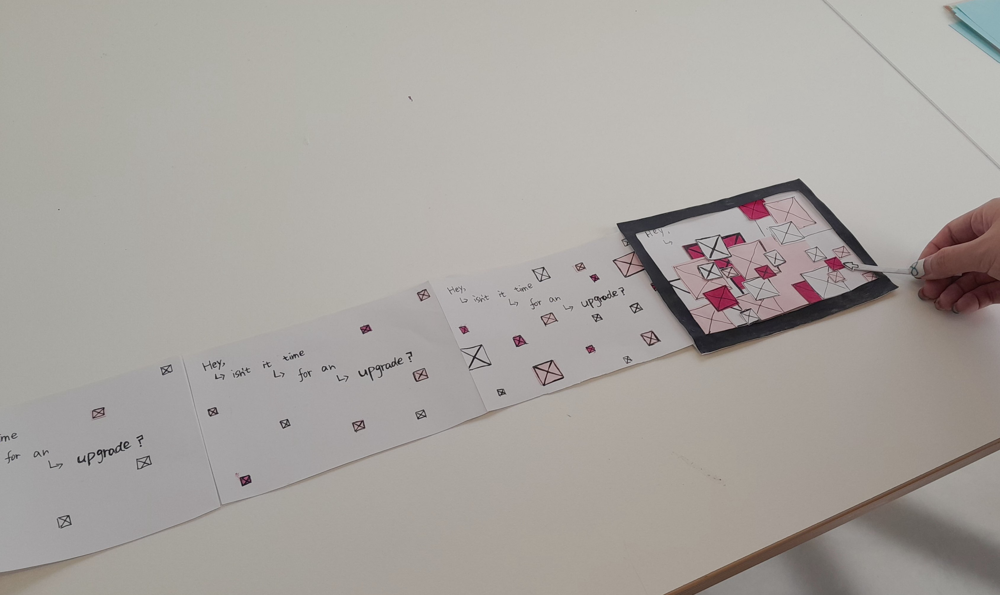
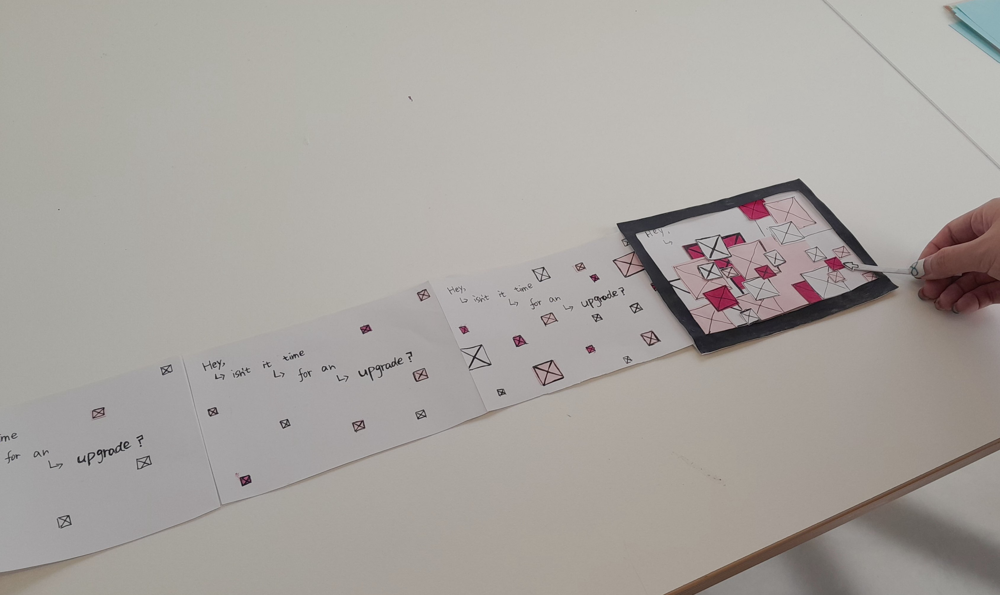

Week 2.
In our class, we explored concrete poetry, which was new to me. Although I couldn't find examples from South Korea, I discovered the interesting poem "Blues" by bpNichol. The reversal of the word "love" and the repetition of the letter "e" to create sound were clever. To me, each word seemed like a person, but I believe everyone finds their own meaning in it.
Brainstorming words on the screen using the Crazy 8 method, and then writing code, were entirely new experiences for me. It felt like learning a foreign language, complete with its own system and rules. Using my sketch as a guide, I had to communicate with the machine in very specific terms about what actions to take.
We selected texts from “OK texts from metadata” and made concrete poetry-inspired sketches. My text was “We cannot process your information. Your information is corrupt and needs cleansing. Erase brain? OK.” I illustrated a funnel shape to suggest information not processing
The three images are from our retro game prototype activity. We went through the stages of ideation, sketching, explaining how it works, and testing each other's prototypes. It was fascinating to see how different users approached the game in unexpected ways. I learned that giving clear instructions is important for a good user experience.


 
